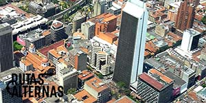

Inicio
Para comer
Para bailar
Experiencias
Galería
Editorial
Inicio
Para Comer
Para Bailar
Experiencias
Galería
Editorial
Para comer
Actualizado hace 5 horas
LOS MEJORES LUGARES PARA CENAR EN LA CIUDAD
Un ‘parche’ tranquilo para experimentar diferentes platos y probar nuevos sabores.
La lista la conforman diversos restaurantes de la ciudad, los cuales se han encargado de brindarle a ciudadanos y turistas grandes experiencias y deliciosos sabores.
Galería
¡NO DEJES DE DISFRUTAR!
Si te encuentras en Medellín, no olvides mirar las imágenes que se encuentran en esta galería, allí encontrarás las grandes experiencias que vivirás en una o varias noches en la ciudad. Antójate de estos exquisitos platos, seguramente desearás volver.
Para comer
MERCADO DEL RÍO: LLEGÓ PISANDO FUERTE
Un nuevo espacio que tuvo gran acogida en Medellín.
Mercado del Río llega a la ciudad a finales del 2016 con una manera diferente de cenar, es el sueño de un grupo de personas que ha abierto sus puertas y pone a disposición de la ciudad su gran y diversa oferta gastronómica.
Para bailar
Actualizado hace 2 horas
MEDELLÍN: PARA TODOS LOS GUSTOS
Como la segunda ciudad más grande de Colombia, podrás salir a divertirte en una gran variedad de lugares.
Al llegar a Medellín sentirás una energía vibrante. Disfrutar de la vida nocturna que la ciudad tiene para ofrecer, es una excelente manera de vivir la cultura de la ciudad.
Editorial
RUTAS ALTERNAS
Medellín: una ciudad prometedora de día y noche.

Medellín ha sido, desde hace mucho tiempo, un lugar marcado por la violencia y el narcotráfico. No obstante, las últimas décadas ha mostrado un notorio esfuerzo por cambiar su imagen y mostrarse como una sociedad creativa y una ciudad innovadora.
Experiencias
LO MEJOR DE MEDELLÍN
Ciudad que se queda con el corazón de cada visitante.
Pregúntale a cualquier viajero sobre Sudamérica y es probable que te cuente alguna historia loca sobre Medellín.